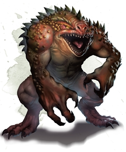

Hezrou
Hezrous serve as foot soldiers in the demonic hordes of the Abyss. Although physically powerful, they are weak-minded and hezrous can easily be duped into sacrificing themselves by more powerful demons. As they press their attacks into the heart of an enemy’s forces, their foul stench can sicken even the toughest foes.